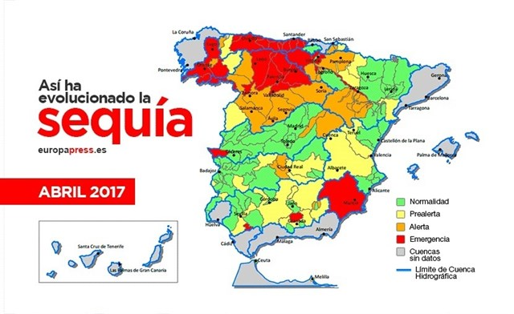

Ultimos datos
La peor situación sigue estando en la cuenca del río Segura, donde las reservas sólo llegan al 13% de su capacidad, seguida de la del Júcar, con un 25%.
Pero esto no es todo. También están por debajo de media nacional los embalses de ríos tan importantes como el Duero (al 30%), el Guadalquivir (34%) y, mientras tanto, el Tajo remonta un poco hasta al 40%.
De esta situación de extrema sequía solo se “salvan” las cuencas del Cantábrico que superan el 55%, Cataluña (con el 53%) y el País Vasco. Pero, este año hidrológico (que comienza en octubre) se arrastra un déficit de lluvias de un 15%, según los datos de AEMET, la Agencia Estatal de Meteorología.